Turbulence in Fire – Phenomena, Equations and Models
![]()
Introduction and Overview
Teaching goals
| Turbulence in Fire | Previous Knowledge | Course Learning Outcomes | ||
|---|---|---|---|---|
| Knows Before | Must Know | Should Know | Nice to Know | |
| Scientific competence; what does the student know about theory | Basic fluid mechanics | Can identify and describe three main types of modeling in CFD | Can identify the relevant length and time scales in a flow scenario and relate these to turbulence scales | Dynamic models, etc. |
| Professional competence and skills; what the student knows and can do in practice | Run FDS simulations | Specify FDS inputs for turbulence models | Estimate resolution requirements for a practical fire scenario | Derive closure models |
Phenomena
Example – From a laminar to a turbulent flow
Source: YouTube
Macroscopic impact
In general:
- Intermittency
- Scalar Mixing
- Eddies
- structure and energy Cascade
- Dissipation at small scales
- Chaotic, yet structured
In fire dynamics:
- mixing for combustion
- fire plume dynamics
- enhance of heat and mass transfer

{kind=link}
Example?
pipe flow
magnitude velocity profile
non trivial normal velocities
instantanious velocity values (maybe from our plume measurements?)
Exercise – Compute fluctuation spectrum?
given instantanious velocity data, compute fluctuations
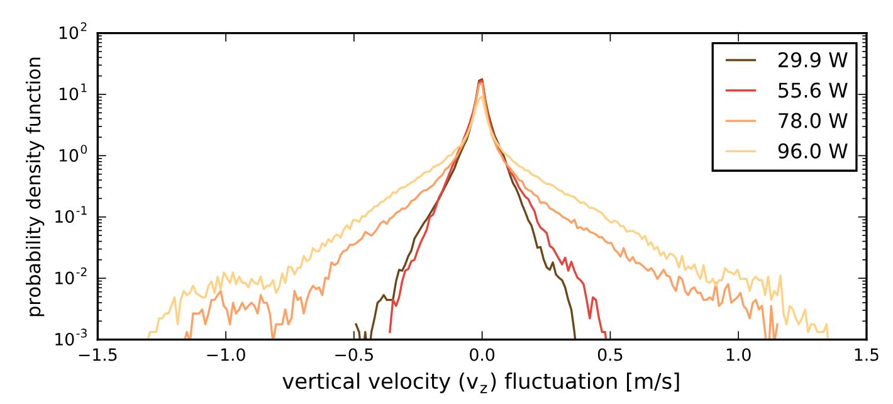Fundamentals Turbulence
Governing Equations – needed at this point?
Navier Stokes equation
species equation
energy equation
Reynolds Experiment (1883)
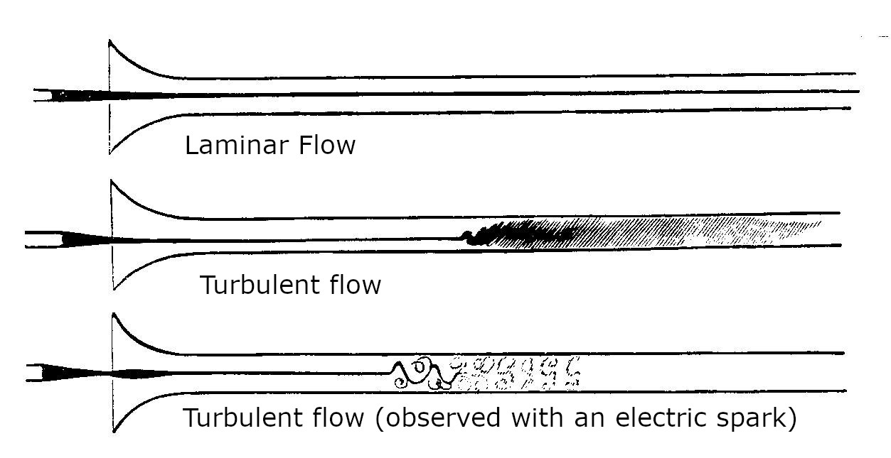Reynolds Number
The Reynolds number (Re) is the ratio of inertial to viscous forces in a fluid (element).
\[ \text{Re} = \frac{vL}{\nu} = \frac{\rho v L}{\mu} \]
With:
- the fluid density \(\rho\), in \(kg/m^3\)
- the flow velocity \(v\), in \(m/s\)
- a characteristic length scale \(L\), in \(m\)
- the dynamic \(\mu\) and kinematic \(\nu\) viscosity of the fluid, in \(kg/(ms)\) and \(m^2/s\)
Turbulence Characterisation with the Reynolds Number
Example pipe flow?
- Re < xxx : laminar
- Re > xxx : turbulent
Example, estimate Re for a candle and a pool fire
Exercise – Kármán Vortex Street
Description: One of the impact parameters on the flow structure behind an object is the Reynolds number (Re). A classical phenomenon is the Kármán vortex street. In this example, the impact of Re is qualitatively investigated.
The simulation geometry is a 2D domain with a main object (plate) and a small object to disturb the symmetry. There is an fixed inflow \(v_0\) boundary condition at \(x_{\text{min}}\) and an open boundary condition at \(x_{\text{max}}\). Both boundaries in z-direction are solid walls.
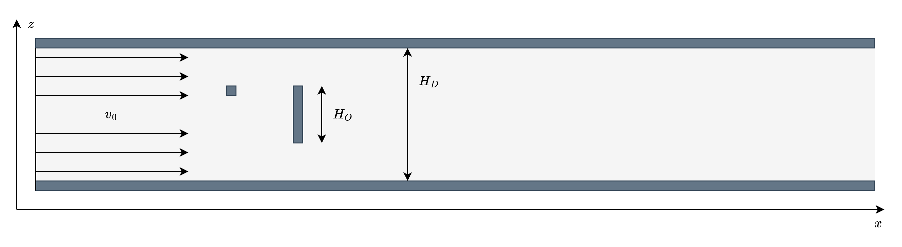Exercise – Tasks
- Open the input file vortex_street.fds and check for the values of inflow velocity \(v_0\), the geometry parameters \(H_D\) and \(H_O\), and the viscosity \(\nu\) of the fluid.
- Calculate the Reynolds number for this setup.
- Run the execution of the provided FDS input file.
- Visualize the result, e.g., the y-component of the vorticity.
- Adjust the Reynolds number by a factor of 0.5 and 10 by adjusting the viscosity.
- Compare the results. What do you observe?
Exercise – Results
\[ v_0 = 0.5 m/s \]
\[ H_O = 0.01 m \]
\[ Re = \frac{v\, L}{\nu} = \frac{v_0\, H_O}{\nu} = \frac{5\cdot 10^{-3}}{\nu} \]
Exercise – Results
\[\nu = 12\cdot 10^{-6} \Rightarrow Re \approx 416\]
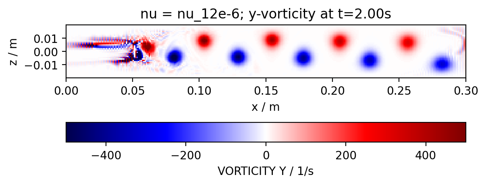Exercise – Results
\[\nu = 12\cdot 10^{-5} \Rightarrow Re \approx 42\]
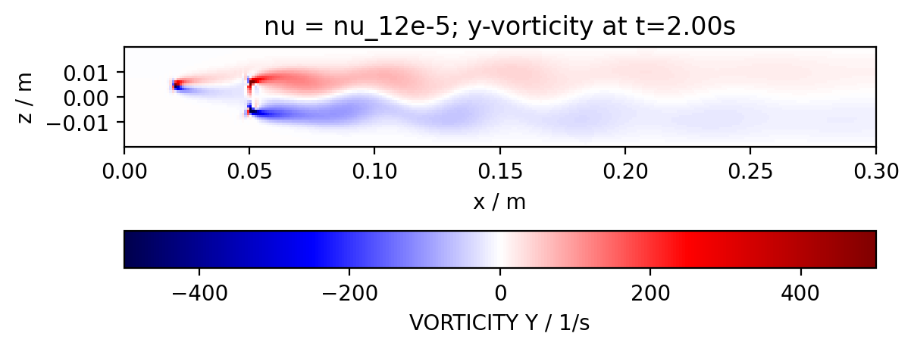Exercise – Results
\[\nu = 6\cdot 10^{-6} \Rightarrow Re \approx 833\]
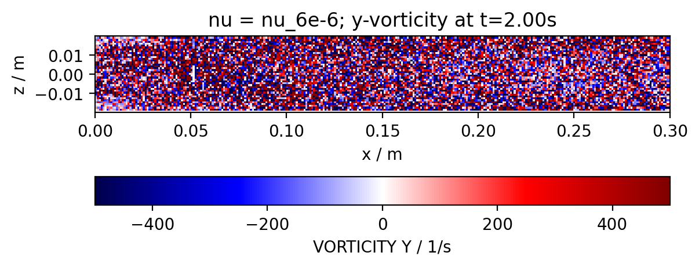Scales in Turbulence
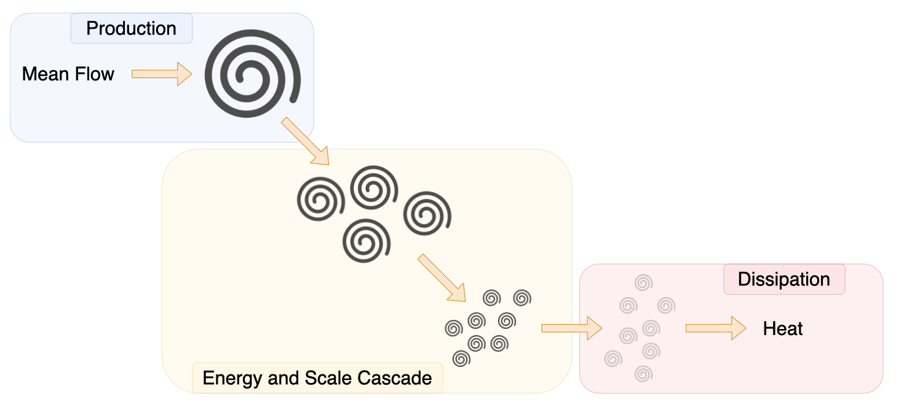Integral scale
Intertial scale
Kolmogorov scale
Kolmogorov theory
Assumptions:
- Universal, i.e. independet of how turbulence was generated
- (Local) isotropy
- Energy cascade, kinetic energy is transported from large to small scales without losses, until it is dissipated at the smallest scales by viscosity
Kolmogorov Scales:
- length: \(\eta = \left( \frac{\nu^3}{\varepsilon} \right)^{1/4}\)
- time: \(\tau_\eta = \left( \frac{\nu}{\varepsilon} \right)^{1/2}\)
- velocity: \(u_\eta = (\nu \varepsilon)^{1/4}\)
Energy Spectrum
\[E(k) = C \, \varepsilon^{2/3} \, k^{-5/3}\]
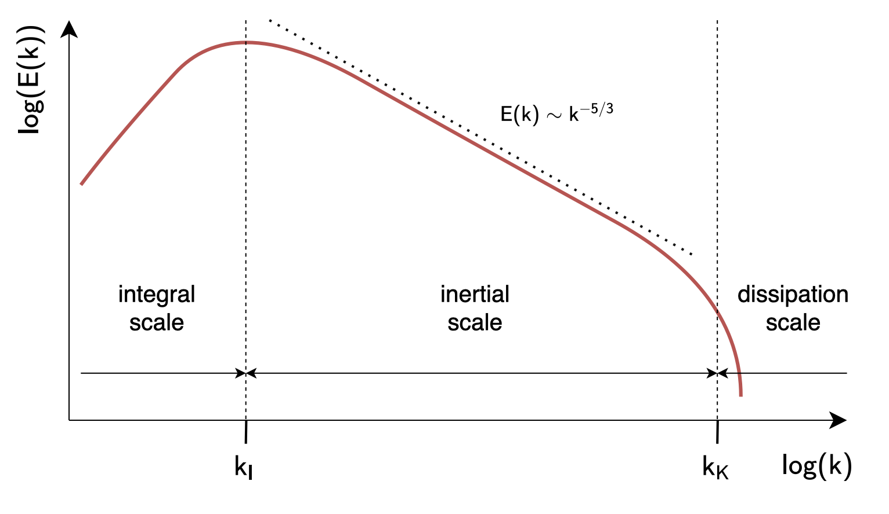Numerical Resolution
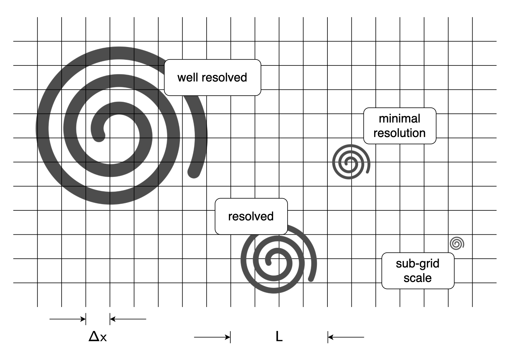DNS
direct numerical simulation of the Navier-Stokes equations, no subgrid turbulence model
\[ \frac{\partial \rho u_i}{\partial t} + \frac{\partial}{\partial x_j} (\rho u_i u_j) = -\frac{\partial p}{\partial x_i} - \frac{\partial \tau_{ij}}{\partial x_j} + \rho g_i + f_{d,i} + \dot{m}'''_{\text{b}} u_{\text{b},i} \]
the Kolmogorov scale, \(\eta\), needs to be resolved
\[ \eta = \left( \frac{\nu^3}{\varepsilon} \right)^{1/4} \]
dissipation rate and strain rate tensor
\[ \varepsilon \equiv \tau_{ij} \frac{\partial u_i}{\partial x_j} = 2\mu \left( S_{ij} S_{ij} - \frac{1}{3} (\nabla\cdot\mathbf{u})^2 \right) \quad;\quad S_{ij} \equiv \frac{1}{2} \left( \frac{\partial u_i}{\partial x_j} + \frac{\partial u_j}{\partial x_i} \right) \]
Exercise – Estimate \(\eta\)
Use estimation of dissipation rate eps = U^3 / L
U, L at large scale
eta approx L * Re^-3/4
do the small scales matter?
High numerical resolution needed down to \(\eta\)
LES Equations
Idea: Subgrid Scale (SGS) Modelling
figure with energy specturm illustrating the resolved and modelled parts
resolved vs. modeled sub-grid scale quantites, e.g. k_sgs and K for kinetic energy
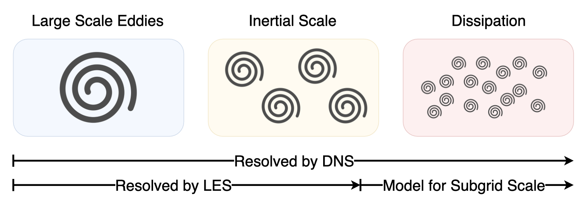Temporal Averaging
definition, illustrative figure with u(t) = u_mean + u_fluct
Spatial Filtering
using a filter width \(\Delta\), define a “box” filtered quantity \(\overline{\phi}\)
\[ \overline{\phi}(x, y, z, t) \equiv \frac{1}{V_c} \int_{x - \delta x / 2}^{x + \delta x / 2} \int_{y - \delta y / 2}^{y + \delta y / 2} \int_{z - \delta z / 2}^{z + \delta z / 2} \phi(x', y', z', t) \, \mathrm{d}x' \, \mathrm{d}y' \, \mathrm{d}z' \]
Favre averaging for variable density
\[ \overline{\rho} \, \widetilde{\phi} \equiv \overline{\rho \phi} \quad \Rightarrow \quad \widetilde{\phi} \equiv \frac{\overline{\rho \phi}}{\overline{\rho}} \]
needed, when density is not constant, as otherwise conservation properties may not be conserved
Filtered Fields – Order Matters
mean (filter) of the square vs. square of the mean (filter)
- Filtering and squaring do not commute.
- This matters in turbulence modeling.
- We filtered a high-frequency periodic field:
- Gaussian filter
- \[\Delta = 0.1\,L\]
- \[\overline{u^2} \neq \bar{u}^2\]
- Therefore we cannot simply use resolved quantities for nonlinear terms
- We require a “subgrid model” to account for the residual
Exercise – Filter a Given Function
is this a good / needed exercise?
exercise with simple numbers, done on paper
given (e.g. three value pairs) u and rho, compute u_bar and u_tilde and u_rho_bar
check for for total momentum with / without favre filter
| Cell | \(\rho\) (kg/m^3) | \(u\) (m/s) | \(\rho u\) (kg/m^2/s) |
|---|---|---|---|
| 1 | 1.0 | 10.0 | 10.0 |
| 2 | 10.0 | 1.0 | 10.0 |
| 3 | 1.0 | 10.0 | 10.0 |
LES Momentum Equation (I)
DNS equation (without mass source, external forces)
\[ \frac{\partial \rho u_i}{\partial t} + \frac{\partial}{\partial x_j} (\rho u_i u_j) = -\frac{\partial p}{\partial x_i} - \frac{\partial \tau_{ij}}{\partial x_j} + \rho g_i + f_{d,i} + \dot{m}'''_{\text{b}} u_{\text{b},i} \]
use spatial filter, derivatives and filtering commute
\[ \frac{\partial \overline{\rho u_i}}{\partial t} + \frac{\partial}{\partial x_j} (\overline{\rho u_i u_j}) = -\frac{\partial \overline{p}}{\partial x_i} - \frac{\partial \overline{\tau_{ij}}}{\partial x_j} + \overline{\rho} g_i + \overline{f_{d,i}} + \overline{\dot{m}'''_{\text{b}} u_{\text{b},i}} \]
Problem: \(\overline{\rho u_i u_j}\)
Use Favre filter: \(\overline{\rho} \, \widetilde{{u}_i {u}_j}\)
LES Momentum Equation (II)
\[ \frac{\partial \overline{\rho} \, \tilde{u}_i}{\partial t} + \frac{\partial}{\partial x_j} \left( \overline{\rho} \, \widetilde{{u}_i {u}_j} \right) = -\frac{\partial \overline{p}}{\partial x_i} - \frac{\partial \overline{\tau}_{ij}}{\partial x_j} + \overline{\rho} \, g_i + \overline{f}_{d,i} + \overline{\dot{m}'''_b} \, \tilde{u}_{b,i} \]
all primitve variables, but \(\widetilde{{u}_i {u}_j} \neq\tilde{u}_i\tilde{u}_j\)
find closure, but defining a sub-grid scale stress \(\tau_{ij}^{\text{sgs}}\)
\[ \tau_{ij}^{\text{sgs}} \equiv \overline{\rho} \left( \widetilde{u_i u_j} - \tilde{u}_i \tilde{u}_j \right) \]
this leads to the LES momentum equation
\[ \frac{\partial \overline{\rho} \, \tilde{u}_i}{\partial t} + \frac{\partial}{\partial x_j} \left( \overline{\rho} \, \tilde{u}_i \tilde{u}_j \right) = -\frac{\partial \overline{p}}{\partial x_i} - \frac{\partial \overline{\tau}_{ij}}{\partial x_j} - \frac{\partial \tau^{\mathrm{sgs}}_{ij}}{\partial x_j} + \overline{\rho} \, g_i + \overline{f}_{\mathrm{d},i} + \overline{\dot{m}'''_{\mathrm{b}}} \, \tilde{u}_{\mathrm{b},i} \]
Turbulent Viscosity
decompose \(\tau_{ij}^{\text{sgs}}\)
\[ \tau_{ij}^{\mathrm{dev}} \equiv \overline{\tau}_{ij} + \tau^{\mathrm{sgs}}_{ij} - \frac{1}{3} \tau^{\mathrm{sgs}}_{kk} \delta_{ij} = -2 (\mu + \mu_t) \left( \widetilde{S}_{ij} - \frac{1}{3} (\nabla \cdot \tilde{\mathbf{u}}) \delta_{ij} \right) \]
turbulent viscosity \(\mu_t\) must be modelled
we absorb the trace of the sub-grid stress, which is related to the sub-grid kinetic energy, \(k_{sgs}\), into the pressure as follows
\[ k_{\mathrm{sgs}} \equiv \frac{1}{2} \tau_{kk}^{\mathrm{sgs}} \quad ; \quad \bar{p} \equiv \overline{p} + \frac{2}{3} k_{\mathrm{sgs}} \]
leads to apparently same equations as DNS
\[ \frac{\partial \overline{\rho} \, \tilde{u}_i}{\partial t} + \frac{\partial}{\partial x_j} \left( \overline{\rho} \, \tilde{u}_i \tilde{u}_j \right) = -\frac{\partial \bar{p}}{\partial x_i} - \frac{\partial \tau^{\mathrm{dev}}_{ij}}{\partial x_j} + \overline{\rho} \, g_i + \overline{f}_{\mathrm{d},i} + \overline{\dot{m}'''_{\mathrm{b}}} \, \tilde{u}_{\mathrm{b},i} \]
Transport of Kinetic Energy
resolved kinetic energy: \(K \equiv \frac{1}{2} \tilde{u}_i \tilde{u}_i\)
\[ \overline{\rho} \,\frac{D K}{D t} = -\tilde{u}_i \frac{\partial \bar{p}}{\partial x_i} - \tilde{u}_i \frac{\partial \tau^{\mathrm{dev}}_{ij}}{\partial x_j} + (\overline{\rho} \, g_i + \overline{f}_{\mathrm{b},i}) \tilde{u}_i \]
and
\[ \overline{\rho} \, \frac{D K}{D t} + \frac{\partial}{\partial x_j} \left( \left[ \bar{p} \, \delta_{ij} + \tau^{\mathrm{dev}}_{ij} \right] \tilde{u}_i \right) = \bar{p} \, \frac{\partial \tilde{u}_i}{\partial x_i} + \tau^{\mathrm{dev}}_{ij} \, \frac{\partial \tilde{u}_i}{\partial x_j} + (\overline{\rho} \, g_i + \overline{f}_{\mathrm{b},i}) \tilde{u}_i \]
Here let’s put an image of the Kolmogorov spectrum with intetral of resolved \(K\) and subgrid \(k_{sgs}\).
Transport of Chemical Species
\[ \frac{(\rho Z_\alpha)}{\partial t} + \frac{\partial (\rho Z_\alpha u_j)}{\partial x_j} = \frac{\partial}{\partial x_j}\left(\rho D_\alpha \frac{\partial Z_\alpha}{\partial x_j}\right) + \dot{m}_\alpha''' + \dot{m}_{\rm b,\alpha}''' \]
\[ \frac{(\overline{\rho} \tilde{Z}_\alpha)}{\partial t} + \frac{\partial (\overline{\rho} \widetilde{Z_\alpha u_j})}{\partial x_j} = \frac{\partial}{\partial x_j}\left(\overline{\rho} D_\alpha[\tilde{T}] \frac{\partial \tilde{Z}_\alpha}{\partial x_j}\right) + \overline{\dot{m}_\alpha'''} + \overline{\dot{m}_{\rm b,\alpha}'''} \]
\[ \frac{(\overline{\rho} \tilde{Z}_\alpha)}{\partial t} + \frac{\partial (\overline{\rho} \tilde{Z}_\alpha \tilde{u}_j)}{\partial x_j} = - \frac{\partial J_{\alpha,j}^{sgs}}{\partial x_j} + \frac{\partial}{\partial x_j}\left(\overline{\rho} D_\alpha[\tilde{T}] \frac{\partial \tilde{Z}_\alpha}{\partial x_j}\right) + \overline{\dot{m}_\alpha'''} + \overline{\dot{m}_{\rm b,\alpha}'''} \]
where
\[ J_{\alpha,j}^{sgs} \equiv \overline{\rho} (\widetilde{Z_\alpha u_j} - \tilde{Z}_\alpha \tilde{u}_j) \]
- \(J_{\alpha,j}^{sgs}\) is unclosed
- \(\overline{\dot{m}_\alpha'''}\) is unclosed and determines heat release rate!
Transport of Sensible Enthalpy
\[ \frac{\partial (\rho h_s)}{\partial t} + \frac{(\rho h_s u_j)}{\partial x_j} = \frac{\mathrm{D} \bar{p}}{\mathrm{D} t} - \frac{\partial \dot{q}_j''}{\partial x_j} - \frac{\partial \dot{q}_{r,j}''}{\partial x_j} + \dot{q}''' + \dot{q}_b''' \]
\[ \frac{\partial (\overline{\rho} \tilde{h}_s)}{\partial t} + \frac{(\overline{\rho} \tilde{h}_s \tilde{u}_j)}{\partial x_j} = \frac{\mathrm{D} \bar{p}}{\mathrm{D} t} - \frac{\partial \dot{q}_j''^{sgs}}{\partial x_j} - \frac{\partial \overline{\dot{q}_j''}}{\partial x_j} - \frac{\partial \overline{\dot{q}_{r,j}''}}{\partial x_j} + \overline{\dot{q}'''} + \overline{\dot{q}_b'''} \]
where
\[ \dot{q}_j''^{sgs} \equiv \overline{\rho}\left(\widetilde{h_s u_j}-\tilde{h}_s \tilde{u}_j\right) \]
\[ \overline{\dot{q}_j''} = - \overline{k \frac{\partial T}{\partial x_j}} - \overline{ \sum_\alpha h_{s,\alpha} \rho D_\alpha[T] \frac{\partial Z_\alpha}{\partial x_j}} \]
- \(\dot{q}_j''^{sgs}\) is unclosed
- \(\overline{\dot{q}_j''}\) is unclosed and important at the wall
Thermal Coduction and Species Diffusion
\[ k_t = \frac{\mu_t c_p}{\mathrm{Pr}_t} \]
and
\[ (\rho D)_t = \frac{\mu_t}{\mathrm{Sc}_t} \]
with the assumption / choice of \(\mathrm{Pr}_t = \mathrm{Sc}_t\) = const. = 0.5
LES Turbulent Viscosity Models
General Idea
Smagorinski
Deardorff
Exercise – Decay of Isotropic Turbulence
Description: An initial velocity field (file cbc32_uvw.csv) in a periodic cubic domain (length \(L\)) is used to compute the decay of the kinetic energy due to turbulence. The number of grid points \(n\) in all directions is 32.
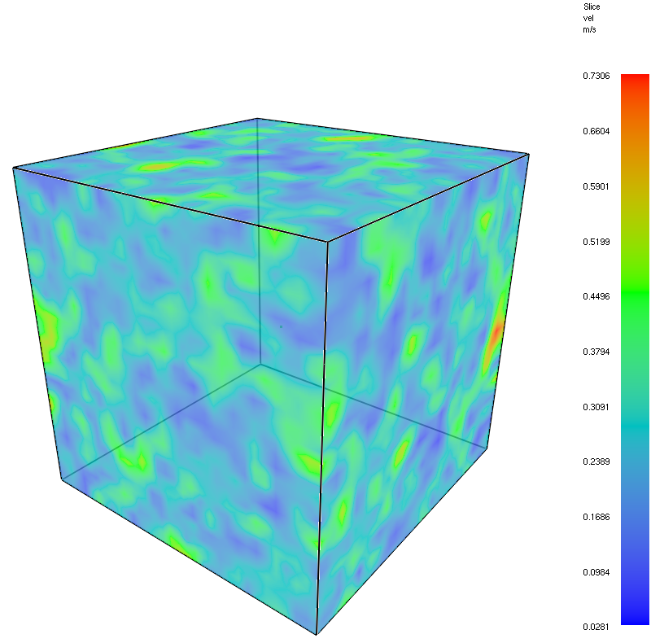
\[ L = 0.56549\ m \]
\[ k_0 = \frac{2\pi}{L} = 11.11\ m^{-1} \]
\[ k_{\text{Nq}} = \frac{k_0 \cdot n}{2} = 177.77\ m^{-1} \]
Exercise – Task (I)
- Use the FDS input file template (dec_turb_template.fds).
- Run the provided input file and visualize the velocity field (slices at domain boundary).
- Add a device to monitor the mean kinetic energy in the whole volume.
ID = 'KE'
QUANTITY = 'KINETIC ENERGY'
SPATIAL_STATISTIC = 'MEAN'- Plot the development of the mean kinetic energy as a function of time.
- Create two additional cases:
- molecular viscosity only
- no turbulent and no molecular viscosity
- Plot the development in all cases and add the following reference data:
ref_x = [0.0, 0.28, 0.67]
ref_y = [0.048, 0.0175, 0.0093]Exercise – Results
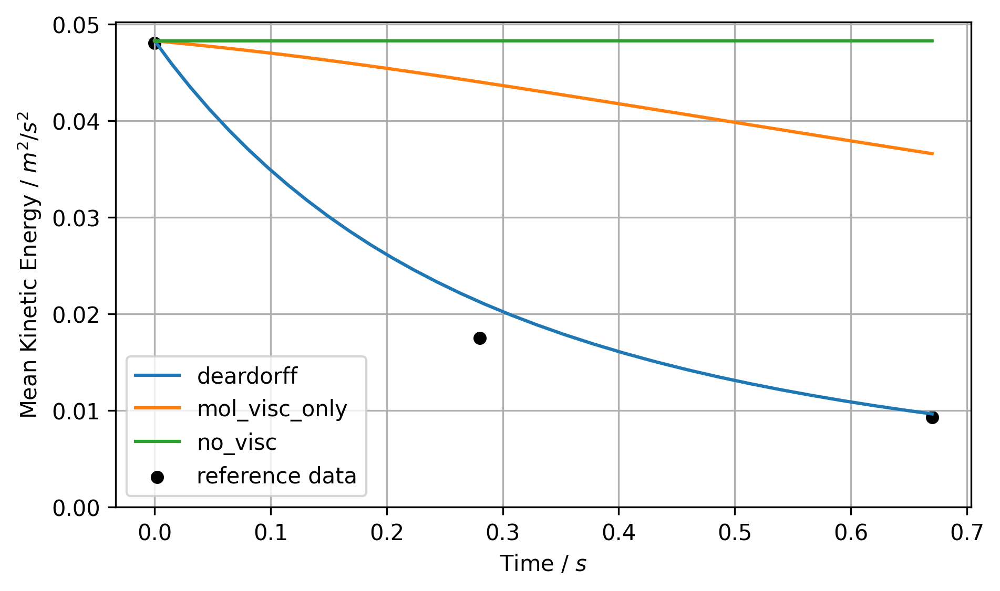Exercise – Task (II)
The provided input file outputs the full velocity field at three selected times.
&DUMP RAMP_UVW='times' /
&RAMP ID='times', T=0.00 /
&RAMP ID='times', T=0.28 /
&RAMP ID='times', T=0.67 /Use the script plot_spectrum.py to compute and visualize the kinetic energy spectrum. Eventually, paths in the script need to be adjusted.
Exercise – Results
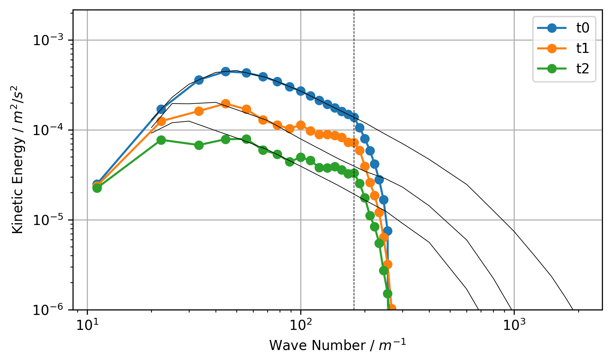Exercise – Shear Flow
setup: shear flow, 2D, bounded, periodic
creation of vortices and kinetic energy
goal: ??
Exercise – Results
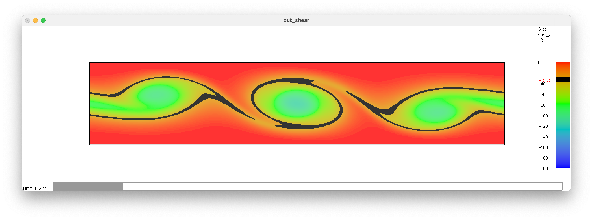Thermal and material diffusivity
Boundary Layers
Demonstration of a Boundary Layer
Source: YouTube
Structure of a Boundary Layer

Viscous Scales
Note: adjust consistent writing, e.g. \(u\) vs. \(v\)
In the region near the wall, the shear stress is only due to the viscous part:
\[ \tau_w = \left. \rho \nu \left( \frac{\text{d}\langle u \rangle}{\text{d}y}\right)\right|_{y=0} \]
The velocity scale (friction velocity)
\[ u_\tau \equiv \sqrt{\frac{\tau_w}{\rho}} \]
and the length scale (viscous lengthscale)
\[ \delta_\nu \equiv \nu \sqrt{\frac{\rho}{\tau_w}} = \frac{\nu}{u_\tau} \]
Scaling
Based on the viscous sclaes, velocity and distance is scaled as
\[ u^+ \equiv \frac{\langle u \rangle}{u_\tau} \quad \text{and} \quad y^+ \equiv \frac{y}{\delta_\nu} \]
Note: add plot with \(u^+\) as a function of \(y^+\)
\(u^+\) vs \(y^+\)
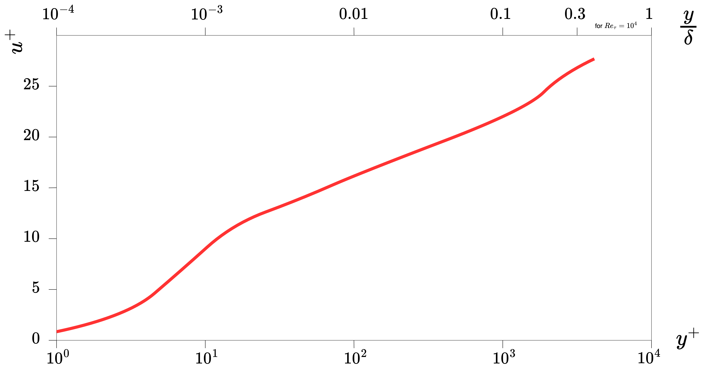Law of the Wall
In FDS, two pproximations for the law of the wall, i.e. \(u^+ = f(y^+)\), in the inner layer (\(y < 0.1\delta\)) are used:
Close to the wall, i.e. \(y^+ \leq 11.81\), \[ u^+ = y^+ \]
and further away, i.e. \(y^+ \geq 11.81\):
\[ u^+ = \frac{1}{\kappa}\ln(y^+) + B \quad \text{with} \quad \kappa=0.41, \, B=5.2 \]
Wall Regions
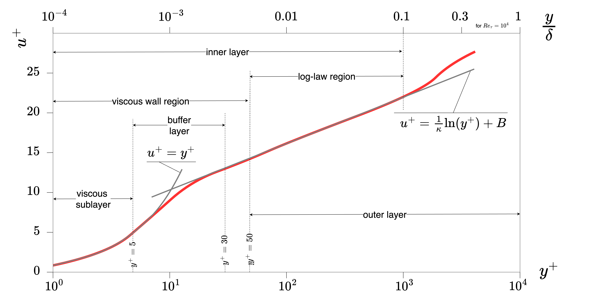Wall Regions
- Inner Layer – velocity profile depends only on \(u_\tau\) and \(y^+\), but not on \(u_0\) and \(\delta\)
- Viscous Wall Region – significant viscous contribution to the shear stress
- Viscous Sublayer – viscous stress is dominating
- Outer Layer – no direct impact of viscosity on velocity profile
- Log-law Region – approximation of log-law valid
Wall Roughness
So far, smooth walls have been assumed. The impact of a wall with a roughness \(s\) can be included in the law of the wall as
\[ u^+ = \frac{1}{\kappa} \ln\left( \frac{y}{s} \right) + \tilde{B}(s^+) \]
with the scaled roughness \(s^+ = s / \delta_\nu\) and \(y = \Delta y / 2\). The parameter \(\tilde{B}\) is given as
\[ \tilde{B} = \begin{cases} B + (1/\kappa) \ln(s^+) & \text{for } s^+ < 5.83 \\ \tilde{B}_{\text{max}} & \text{for } 5.83 \leq s^+ < 30.0 \\ B_2 & \text{for } s^+ \geq 30.0 \end{cases} \]
with \(B_2=8.5\) and \(\tilde{B}_{\text{max}} = 9.5\).
Thermal Boundary Layer

Prandtl Number (Pr)
The Prandtl number (Pr) is defined as the ratio of momentum to thermal diffussivity (\(\alpha\)):
\[ Pr = \frac{\nu}{\alpha} = \frac{c_p\, \mu}{k} \quad \text{with} \quad \alpha = \frac{k}{c_p \rho} \]
with the thermal conductivity \(k\).
Regimes:
- \(Pr \ll 1\), e.g. liquid metals, thermal diffusivity dominates
- \(Pr \approx \mathcal{O}(1)\), e.g. gases, balance of both processes
- \(Pr \gg 1\), e.g. oils, thermal diffusivity is negligible
Boundary Layer Thickness
Boundary layer thickness for the velocity \(\delta_v(x)\) can be estimated with \(Re_x = u_0\, x / \nu\) by:
\[ \delta_v(x)_{\text{laminar}} \approx 5.0 \cdot x \cdot Re_x^{-\frac{1}{2}} \] \[ \delta_v(x)_{\text{turbulent}} \approx 0.37 \cdot x \cdot Re_x^{-\frac{1}{5}} \]
Using Pr, the thermal boundary thickness can be related to the velocity in a laminar flow:
\[ \delta_T(x)_{\text{laminar}} = \delta_v(x)_{\text{laminar}} \cdot Pr_x^{-\frac{1}{3}} \]
In the tublulent case, the thermal boundary thickness does not depend on the thermal diffusion, but only on the flow properties (Re): \[ \delta_T(x)_{\text{turbulent}} \approx \delta_v(x)_{\text{turbulent}} \]
Convective Heat Transfer
In general, the convective heat transfer is dependent on the temperature gradient in the wall normal direction (\(\partial T / \partial n\)) and thermal conductivity:
\[ \dot{q}''_c = -k \frac{\partial T}{\partial n} \]
In DNS simulations, this gradient can be directly estimated as
\[ \dot{q}''_c = -k \frac{T_w - T_g}{\delta n / 2} \]
with the wall surface (\(T_w\)) and the gas temperature (\(T_g\)) at the first gas cell, with a normal cell width \(\delta n\).
Empirical Convection Models
If, like in LES, the gradient can not be computed, empirical corelations can be used to compute the convective heat transfer via a heat transfer coefficient \(h\):
\[ \dot{q}_c'' = h (T_g - T_w) \]
This coefficient can be estimated with the Nusselt number (Nu) by
\[ h = \frac{k}{L} \max \left( \text{Nu}_{\text{free}}, \text{Nu}_{\text{forced}}\right) \]
In FDS, the characteristic length is chosen as \(L=1 m\).
Nusselt Number (Nu) – Free Flow
The Nusselt number (Nu) is the ratio of the total heat transfer to the conductive heat transfer at a boundary. For various configurations, follwoing correlations for the free flow:
\[ \text{Nu}_{\text{free}} = \left\{ \begin{array}{ll} \left( 0.825 + 0.324 \, \text{Ra}^{1/6} \right)^2 & \text{Vertical plate or cylinder} \\ 0.54 \, \text{Ra}^{1/4} & \text{Horizontal hot plate facing up, } Ra \leq 10^7 \\ 0.15 \, \text{Ra}^{1/3} & \text{Horizontal hot plate facing up, } Ra > 10^7 \\ 0.52 \, \text{Ra}^{1/5} & \text{Horizontal hot plate facing down} \\ \left( 0.60 + 0.321 \, \text{Ra}^{1/6} \right)^2 & \text{Horizontal cylinder} \\ 2 + 0.454 \, \text{Ra}^{1/4} & \text{Sphere} \end{array} \right. \]
With the Rayleigh number (Ra) defined as
\[ \text{Ra} = \frac{2g \left| T_g - T_w \right| L^3}{(T_g + T_w) \nu \alpha} \]
Nusselt Number (Nu) – Forced Flow
In case of a forced flow, the Nusselt number is a function of Re and Pr:
\[ \text{Nu}_{\text{forced}} = C_0 + \left( C_1 \text{Re}^n - C_2 \right) \text{Pr}^{\frac{1}{3}} \]
With the coefficients \(C_0\), \(C_1\), \(C_2\) and \(n\) depending on the geometry and Re.
Temperature Scaling
As with the velocity boundary layer, the temperature difference between the gas phase (\(T_g\)) and the wall surface temperature (\(T_w\)) can be scaled as
\[ T^+ = \frac{T_g - T_w}{T_\tau} \]
The used model for \(T^+\) as a function of \(y^+\) is
\[ T^+ = Pr\, y^+ \quad \text{for}\quad y^+ \leq 11.81 \]
and
\[ T^+ = \frac{Pr_t}{\kappa}\ln(y^+) + B_T(Pr) \quad \text{with} \quad \text{for}\quad y^+ \leq 11.81 \]
Near-wall Model for Heat Transfer Coefficient
The temperature scale is defined as
\[ T_\tau \equiv \frac{\dot{q_c}''}{\rho\, c_p \, u_\tau} \]
With this, the heat transfer coefficent \(h\) can be rearranged to
\[ h = \frac{\dot{q_c}''}{T_g - T_w} = \frac{\rho\, c_p \, u_\tau}{T^+} \]
Exercise – Heat Transfer to Compartment Ceiling
Description: Stecker compartment.

Exercise – Tasks
- Run the provided input file (steckler.fds).
- Visualise the boundary data.
Exercise – Results

t = 100 s
Exercise – Results
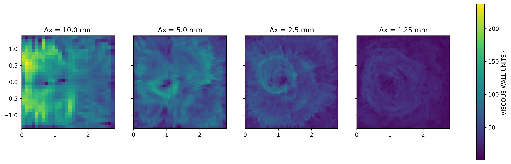t = 300 s
Exercise – Results

t = 500 s
Exercise – Results

Exercise – Results
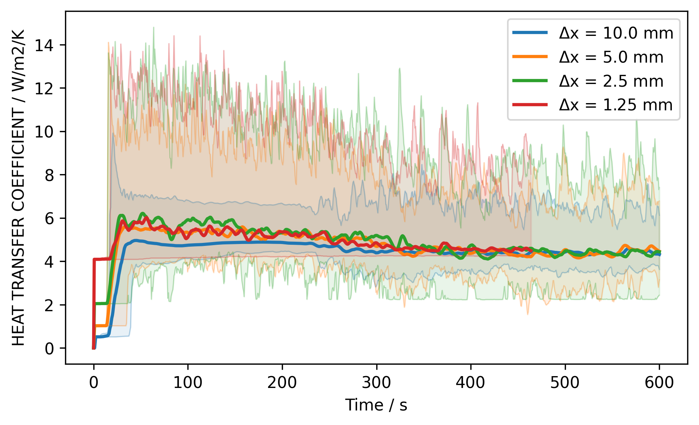Exercise – Results

Exercise – Results

Turbulent Combustion
EDC
Turbulence Radiation Interaction
TRI
Summary
Simulation modes in FDS
| Key Parameter | ‘DNS’ | ‘LES’ | ‘VLES’ | ‘SVLES’ |
|---|---|---|---|---|
CFL_VELOCITY_NORM |
1 | 1 | 2 | 3 |
CHECK_VN |
T | T | T | F |
FLUX_LIMITER |
‘CHARM’ | ‘CHARM’ | ‘SUPERBEE’ | ‘SUPERBEE’ |
CONSTANT_SPECIFIC_HEAT_RATIO |
F | F | F | T |
EXTINCTION_MODEL |
2 | 2 | 1 | 1 |
FDS user perspective on turbulence
Not Covered
- Boundary layers
- Wall functions
- Interaction of Turbulence with chemistry and radiation
Summary
Exercise – Mixing??
Exercise – Lukas naive plume
Turbulence in Fire